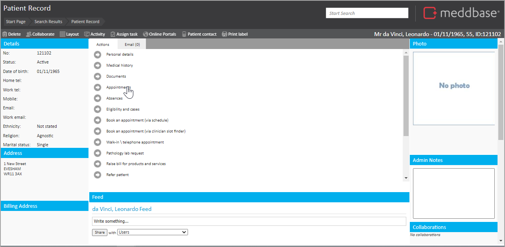
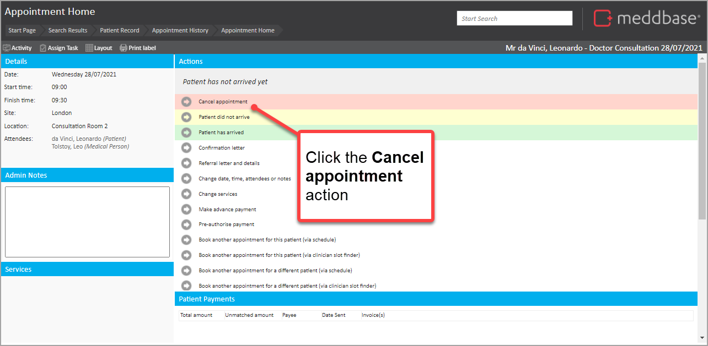
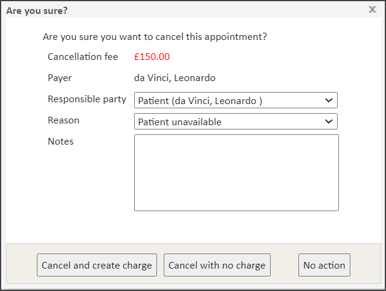
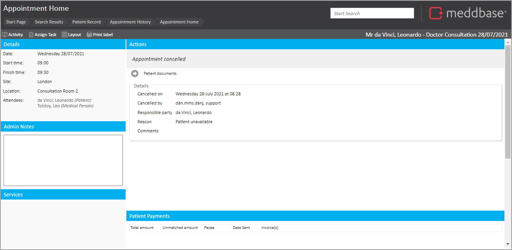

If an appointment is cancelled you may want to record the event and have the opportunity to apply pre-configured Billing rules for cancellation charges.
This article outlines:
It's important to note that:
To cancel an appointment:
1. Navigate to the appointment.

2. Select the appointment to be cancelled.
3. Click the Cancel Appointment option within the Actions pane.

You are presented with an Are you sure? pop-up dialog.

This enables you to select different values and take different actions. The features and options in the dialog are explained in the table below.
| Option / Feature | Explanation |
| Cancellation fee | The cancellation fee that is available to be charged to this appointment. This amount is dependent on the setup of the Cancellation Charge Rule. |
| Payer | The person or organisation who will be the debtor for any cancellation fee created. |
| Responsible party | A drop-down value you can select to identify who is responsible for the cancellation. This list includes the patient, the clinical attendee(s) or the billing company. |
| Reason | A drop-down value you can select to set the reason for the appointment cancellation. This list is configured in Appointment Amendment Reasons which are set via Admin > Common Catalogues. |
| Cancel and create charge | By selecting this option, you record the appointment cancellation and create a charge as per the DNA fee shown in red in the dialog. |
| Cancel with no charge | By selecting this option, you record the appointment cancellation but do not create a charge. |
| No action | By selecting this option, cancellation is not recorded. The options to cancel, arrive or equally record a DNA will still consequently be available. |
| Additional options (not displayed in the screenshot above) | |
| Cancel | This button is displayed when there is no cancellation fee available to apply. By selecting this option, you cancel the appointment. |
In this example, we are going to 'cancel' the appointment but not create a charge.
4. Select the Cancel with no charge button at the bottom of the pop-up window.
The appointment is cancelled.

When an appointment has been cancelled, there are a few effects that are noted below:
As well as marking that a patient 'Did Not Arrive', you may be interested in the following articles: